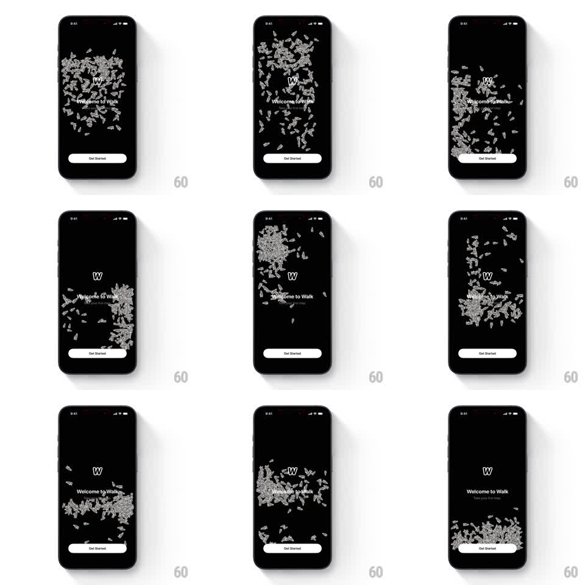

Media
Frame-by-frame

Rebuild this interaction 1:1: Walk's intro - dozens of grayscale 3D sneakers tumble in a physics pile behind the "Welcome to Walk" title, bouncing off the screen edges and rolling with device tilt as they settle and scatter.

Rebuild this interaction 1:1: Walk's intro - dozens of grayscale 3D sneakers tumble in a physics pile behind the "Welcome to Walk" title, bouncing off the screen edges and rolling with device tilt as they settle and scatter. ## Integration Integration: stack-agnostic spec - springs given as stiffness/damping, timed motions as duration + curve; map every value to your framework and animation library of choice. ## Scene Black screen: "W" wordmark, "Welcome to Walk" headline with "Take your first step" subline, a white "Get Started" pill at the bottom, and a swarm of ~40 grayscale 3D sneakers falling, piling, and tumbling across the whole canvas - sometimes heaped at the bottom, sometimes flung up the sides. ## Motion spec Pattern: physics body cluster with gyro input, continuous. - Drop: on load the sneakers rain from above with random spin, bouncing off the floor and each other (restitution ~0.55, gravity 1x) and settling into a pile (2s). - Tilt: device tilt applies lateral gravity (mapped +-1g to +-9.8m/s^2) - the pile rolls and slides toward the tilt, shoes tumbling over each other. - Idle: occasional micro-settles - a shoe rocks and stops; the pile shifts with soft clatter timing (~200ms decay). - Tap-shove: tapping the background flings nearby shoes away from the touch point (impulse ~4m/s radial). ## Calibration - Shoes collide with the screen edges and each other, never with the text - the title and button sit on top with clear space. - Gravity response should feel immediate: under 100ms from tilt to pile motion. ## Reduced motion Static scattered arrangement, no physics or tilt response. ## Don't miss - Shoes are all the same model in grayscale - variety comes from rotation, not color. - The pile is always in motion at load; the screen never opens on a settled heap.